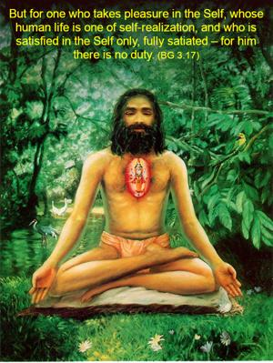
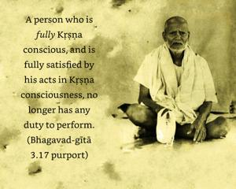
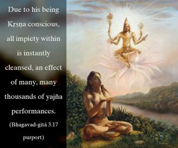
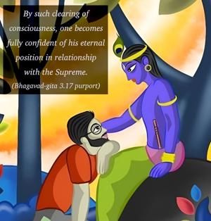

But for one who takes pleasure in the Self, whose human life is one of self-realization, and who is satisfied in the Self only, fully satiated – for him there is no duty.




A person who is fully Kṛṣṇa conscious, and is fully satisfied by his acts in Kṛṣṇa consciousness, no longer has any duty to perform. Due to his being Kṛṣṇa conscious, all impiety within is instantly cleansed, an effect of many, many thousands of yajña performances. By such clearing of consciousness, one becomes fully confident of his eternal position in relationship with the Supreme. His duty thus becomes self-illuminated by the grace of the Lord, and therefore he no longer has any obligations to the Vedic injunctions. Such a Kṛṣṇa conscious person is no longer interested in material activities and no longer takes pleasure in material arrangements like wine, women and similar infatuations.